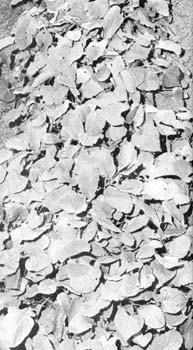

Here's the way smart gardeners plant radishes and turnip greens for fall use: broadcast or .sow the seeds in broad, foot-and-a-half wide swaths. The carpet of foliage reduces chances of frost damage to things like the radish ccrisp radish roots and I've even found that radishes, leaf lettuce and turnips broadcast this way have done well risp radish sown hen sown AFTER early frosts. The same plants grow better in the spring when seeded this way too.